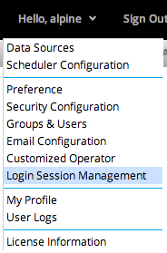
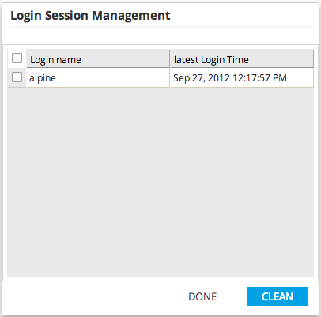

Administrator can manage user logon status through Login Session Management. To open Login Session Management, click the user drop down button and click Login Session Management.

Then the grid display all of user with logon status in present. To terminate logon status for user, select the users which you want to make them logout by force, and click clean button.
